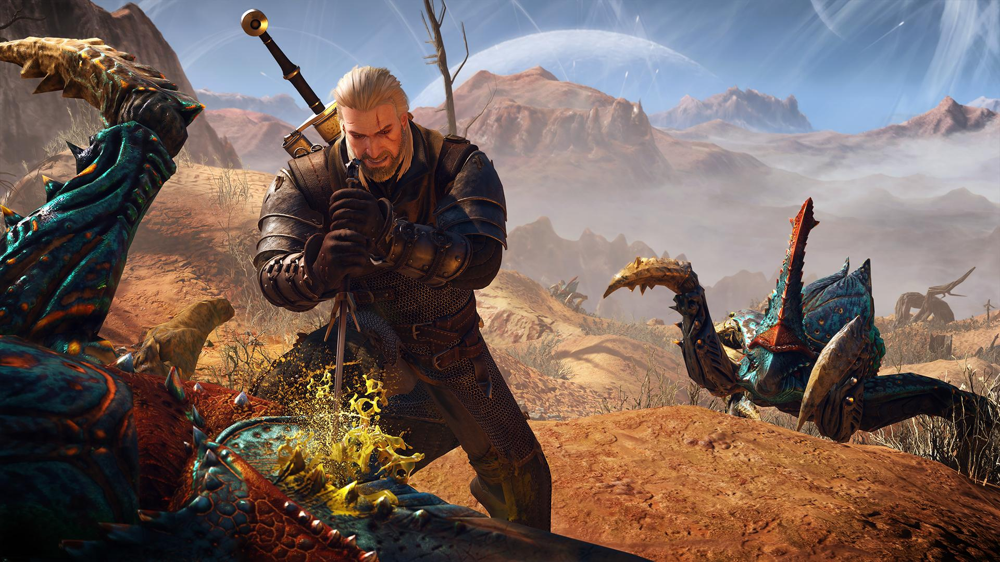
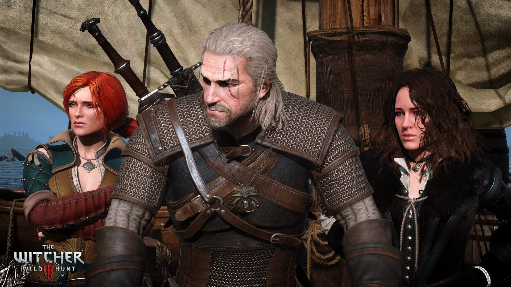

Witcher 3 Yeni Nesil Güncellemesi
Açılış sahnesi, Yennefer'ın büyük bir savaşın ortasında, bilinmeyen bir tehlikeden kaçışıyla başlıyor ve birkaç gün sonrasında Geralt ve Vesemir'in, Yennefer'ın bıraktığı izleri takip ettiğini görüyoruz. Sahnenin sonunda asıl maceramız, Mavi Dağlar'da Witcher'ların kalesi olan Kaer Morhen'deki bir odada başlıyor. Opsiyonel olarak temel hareketleri ve dövüş mekaniklerini öğrendiğimiz kısa bir öğreticiden sonra Vahşi Av'ın ani ve korkutucu gelişini görüyoruz. Hemen sonrasındaysa bu gördüklerimizin Geralt'ın rüyası olduğunu öğreniyoruz.
Geralt, rüyasını Vesemir ile konuşmak için uyanıyor ve birlikte Yennefer'ın izlerini takip etmeye devam ediyorlar.çıkıyorlar. Yüzbaşı, Geralt'a, kendilerini ve kasabayı, ana yol üzerinde köylülere saldıran bir griffin'den kurtarmaları karşılığında Yennefer'ın nereye gittiğini söylemeyi kabul ediyor. Geralt canavarın yuvasını inceleyip griffin için tuzak hazırlıyor ve Vesemir'in yardımıyla kısa sürede griffini alt ediyorlar. Yüzbaşı, Yennefer'ın Vizima 'da olduğunu söylüyor. Geralt ve Vesemir yola çıkmaya hazırlanırken onlara bir grup atlı yaklaşıyor; bu atlı birlik İmparator hazretleri tarafından Yennefer'a eskort etmekle görevi bir birlik. Yennefer, Geralt'ın İmparator Emhyr var Emreis 'in huzuruna çıkmasını istiyor.
Vesemir'de Kaer Morhen'e dönmenin uygun olacağını düşünüp Geralt'tan ayrılıyor.Geralt ve Yennefer (ve yanındaki askerler) Ak Bostan'dan Vizima'ya yolculuk yaparlarken onlara Vahşi Av süvarileri ve tazıları saldırıyor. Ne Geralt'a ne de Yennefer'e hiçbir zarar gelmemesine karşın askerler öldürülüyor. Çift, güvenle Vizima'ya ulaşıyor. İmparator Emhyr, Geralt'tan, kızı Ciri 'yi Vahşi Av'dan önce bulması ve güvenle kendisine getirmesi için bir kontrat teklif ediyor. Geralt yardım etmeyi kabul ediyor ve Yennefer ile farklı bölgelerde arama yapmanın daha iyi sonuç vereceğini düşünüyorlar. Geralt, Ciri'yi aramaya Velen'de başlayacağını ve ona yardım etmesi için Triss Merigold ile görüşeceğini söylüyor. Yennefer'da Ciri ile bağlantılı olabilecek bir takım büyüsel problemi araştırmak için Skellige 'ye yola çıkıyor.